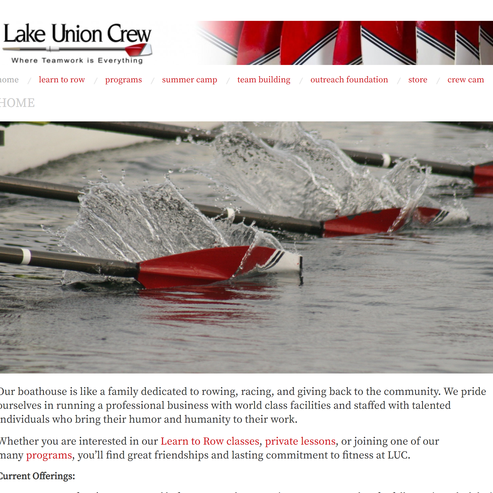
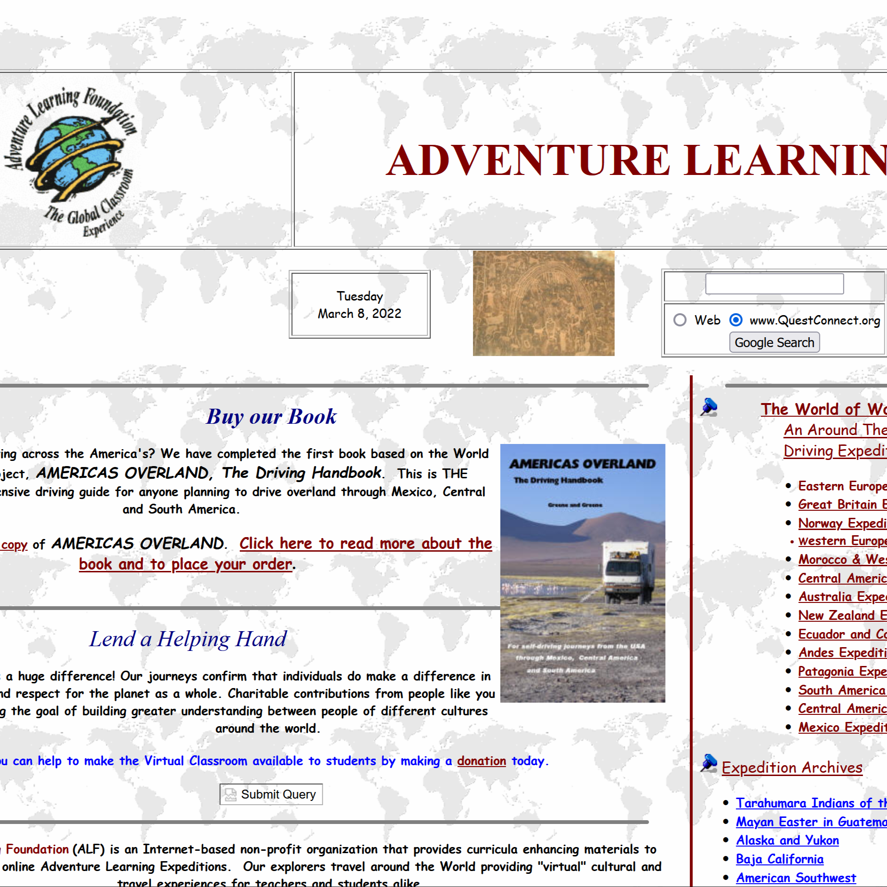

Before and After
LUC - Before
This is the Lake Union Crew website before I got my hands on it. I had a project for school and revamped some pages.

LUC - After
This was a mini HW project where I redesigned my rowing boathouse website. This was my first real exposure to responsive stuff.

Adventure Learning Foundation - Before
This is the Adventure Learning Foundation before I redid the website. This was a final for Web 1 so its not my full skills.

Adventure Learning Foundation - After
This was my final for my Web 1 class. It has some places it could be improved but it has real spirit. I redid a old website.